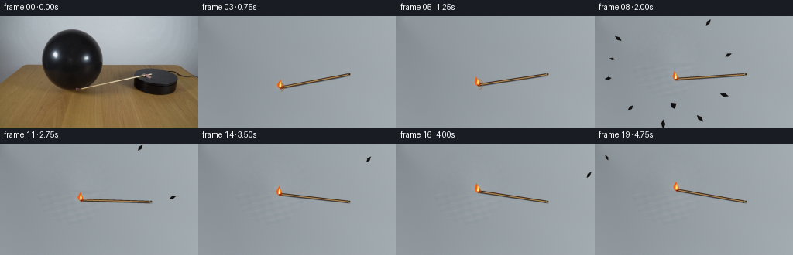
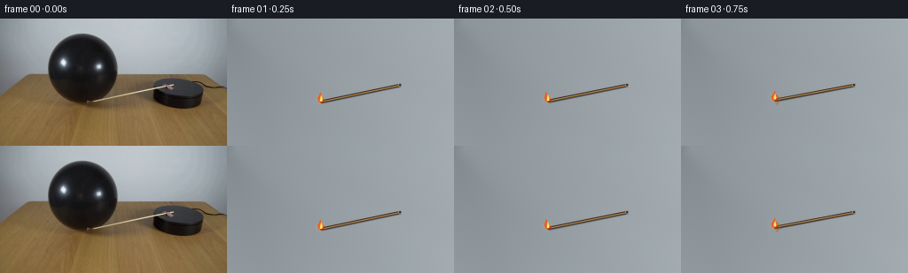
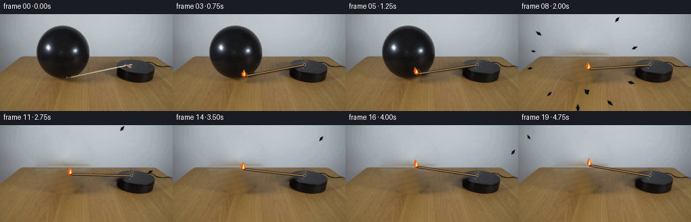
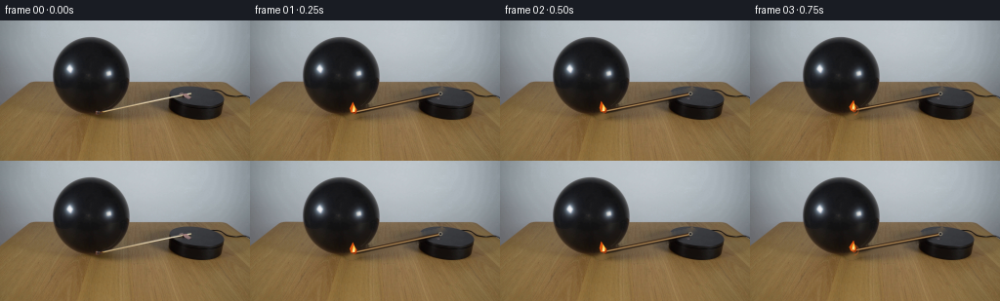

CODING AGENTS AS PIXEL WORLD MODELS
traex/GPT-5.6-Sol · 0113
点击播放 · 原生 RGB 像素
此结果可播放，但该运行尚未通过最终提交审核。页面展示不代表评测通过。
逐轮保存的候选
回放视频、检查图与代码变化。
每份候选均可单独播放。实际图片检查记录在下方工具轨迹中。
候选 01播放与检查图
点击播放 · 原生 RGB 像素


展开代码变化
--- 上一保存版本
+++ 本次保存版本
@@ -0,0 +1,229 @@
+from pathlib import Path
+import math
+import cv2
+import numpy as np
+from PIL import Image, ImageDraw
+import artifact_io
+
+CASE_DIR = Path(__file__).resolve().parent
+W, H = 256, 144
+SS = 4
+rng = np.random.default_rng(113)
+
+
+def ellipse_mask(cx, cy, rx, ry, shape=(H, W)):
+ yy, xx = np.indices(shape, dtype=np.float32)
+ return np.maximum(0.0, 1.0 - ((xx-cx)/rx)**2 - ((yy-cy)/ry)**2)
+
+
+def make_clean_plates(src):
+ """Analytically remove the match arm and synthesize the hidden wall/table."""
+ # Existing match: a narrow diagonal from the balloon to the platform pivot.
+ arm_mask = np.zeros((H, W), np.uint8)
+ cv2.line(arm_mask, (101, 96), (197, 73), 7, 255, cv2.LINE_AA)
+ cv2.circle(arm_mask, (105, 93), 7, 255, -1, cv2.LINE_AA)
+ clean_arm = cv2.inpaint(src, arm_mask, 5, cv2.INPAINT_TELEA)
+
+ # Exact silhouette seen in the source, expanded slightly to include antialiasing.
+ balloon = np.zeros((H, W), np.uint8)
+ contour = np.array([
+ (92,17),(79,20),(70,25),(63,32),(58,41),(55,52),(54,62),
+ (57,73),(62,82),(70,89),(80,94),(90,97),(97,99),(101,96),
+ (110,93),(119,87),(126,78),(130,67),(132,57),(130,45),
+ (126,35),(119,27),(108,21),(100,18)
+ ], np.int32)
+ cv2.fillPoly(balloon, [contour], 255, cv2.LINE_AA)
+ balloon = cv2.dilate(balloon, np.ones((5,5), np.uint8), iterations=1)
+
+ # Telea supplies coherent boundary continuation; a deterministic low-frequency
+ # texture restores the photographic character in the broad hidden center.
+ empty = cv2.inpaint(clean_arm, balloon, 13, cv2.INPAINT_TELEA).astype(np.float32)
+ yy, xx = np.indices((H, W), dtype=np.float32)
+ interior = cv2.GaussianBlur((balloon/255.0).astype(np.float32), (0,0), 2.2)
+
+ # Wall above the rear edge of the table (y ~= 62).
+ noise = rng.normal(0, 1, (H, W)).astype(np.float32)
+ fine = cv2.GaussianBlur(noise, (0,0), 1.2)
+ broad = cv2.GaussianBlur(noise, (0,0), 7.0)
+ texture = 2.2*fine + 2.0*broad
+ wall = yy < 62
+ for c in range(3):
+ empty[:,:,c] += interior * wall * texture
+
+ # Re-establish the straight table/wall horizon which was hidden by the balloon.
+ # Neighboring pixels show a soft horizontal join at rows 62-64.
+ for y in range(60, 66):
+ a = max(0.0, min(1.0, (y-61.0)/3.0))
+ for x in range(50, 137):
+ if interior[y,x] > .08:
+ l = clean_arm[y, 45].astype(np.float32)
+ r = clean_arm[y, 141].astype(np.float32)
+ # Preserve the global left-to-right illumination gradient.
+ u = (x-45)/96.0
+ edge_col = l*(1-u)+r*u
+ empty[y,x] = empty[y,x]*(0.28 if 61 <= y <= 64 else .65) + edge_col*(0.72 if 61 <= y <= 64 else .35)
+
+ # Subtle elongated grain for the newly exposed wooden tabletop.
+ wood_zone = (yy >= 63) & (interior > .03)
+ grain = (2.0*np.sin(xx*.19 + yy*.73) + 1.1*np.sin(xx*.47 - yy*.18))
+ grain += 2.3*cv2.GaussianBlur(rng.normal(0,1,(H,W)).astype(np.float32),(7,1),0)
+ empty[:,:,0] += wood_zone*grain*1.25
+ empty[:,:,1] += wood_zone*grain*.78
+ empty[:,:,2] += wood_zone*grain*.40
+ empty = np.clip(empty, 0, 255).astype(np.uint8)
+ return clean_arm, empty, balloon
+
+
+def rgba_layer():
+ return Image.new('RGBA', (W*SS, H*SS), (0,0,0,0))
+
+
+def P(pt):
+ return tuple(int(round(v*SS)) for v in pt)
+
+
+def composite_rgba(base, layer):
+ a = np.asarray(layer, dtype=np.uint8)
+ # Supersampled transparent layer downsampled with Lanczos.
+ a = np.asarray(layer.resize((W,H), Image.Resampling.LANCZOS), dtype=np.uint8)
+ alpha = a[:,:,3:4].astype(np.float32)/255.0
+ return np.clip(base.astype(np.float32)*(1-alpha) + a[:,:,:3].astype(np.float32)*alpha, 0, 255).astype(np.uint8)
+
+
+def draw_match(frame, angle_deg, fi, popped):
+ pivot = np.array([195.0, 75.0])
+ length = 91.0
+ a = math.radians(angle_deg)
+ tip = pivot + length*np.array([math.cos(a), math.sin(a)])
+ unit = (pivot-tip)/length
+ normal = np.array([-unit[1], unit[0]])
+
+ # Warm, very local flame illumination (kept restrained like the source exposure).
+ yy, xx = np.indices((H,W), dtype=np.float32)
+ flick = math.sin(fi*2.17)*.55 + math.sin(fi*4.03)*.24
+ glow_c = tip + np.array([-1.0, -2.8])
+ glow = np.exp(-(((xx-glow_c[0])/8.0)**2 + ((yy-glow_c[1])/7.0)**2)*2.0)
+ strength = 13.0 + 2.0*flick
+ warmed = frame.astype(np.float32)
+ warmed[:,:,0] += glow*strength
+ warmed[:,:,1] += glow*strength*.52
+ warmed[:,:,2] += glow*strength*.10
+ frame = np.clip(warmed,0,255).astype(np.uint8)
+
+ layer = rgba_layer(); d = ImageDraw.Draw(layer, 'RGBA')
+ pv, tp = P(pivot), P(tip)
+ # Minute cast shadow makes the arm sit on the platform/table plane.
+ d.line([P(tip+(1.0,1.6)), P(pivot+(1.0,1.6))], fill=(15,10,7,115), width=2*SS)
+ # Wooden shaft with dark edge and a fine warm highlight.
+ d.line([tp,pv], fill=(67,45,27,255), width=3*SS)
+ d.line([P(tip+normal*.18),P(pivot+normal*.18)], fill=(204,164,104,255), width=1*SS)
+ # Charred match head.
+ head_center = tip + unit*1.1
+ rr=2.35*SS
+ c=P(head_center)
+ d.ellipse((c[0]-rr,c[1]-rr,c[0]+rr,c[1]+rr), fill=(53,20,12,255), outline=(157,62,22,255), width=SS)
+ # Small fastening pin on the black turntable.
+ cp=P(pivot); rp=2.0*SS
+ d.ellipse((cp[0]-rp,cp[1]-rp,cp[0]+rp,cp[1]+rp), fill=(42,42,43,255), outline=(144,137,119,225), width=SS)
+ frame = composite_rgba(frame, layer)
+
+ # Flame is upright under gravity, while its lower root follows the match tip.
+ flame = rgba_layer(); fd = ImageDraw.Draw(flame, 'RGBA')
+ sway = 1.25*math.sin(fi*2.31) + .55*math.sin(fi*4.7)
+ tx,ty=tip
+ outer=[(tx-2.7,ty+.4),(tx-4.0,ty-3.5),(tx-1.0+sway,ty-10.3),(tx+1.0+sway*.4,ty-6.1),(tx+3.2,ty-2.6),(tx+2.0,ty+.5)]
+ fd.polygon([P(q) for q in outer], fill=(244,91,17,222))
+ inner=[(tx-1.4,ty-.2),(tx-.8,ty-4.5),(tx+.15+sway*.35,ty-7.3),(tx+1.7,ty-3.0),(tx+1.15,ty)]
+ fd.polygon([P(q) for q in inner], fill=(255,213,78,245))
+ core=[(tx-.65,ty-.1),(tx-.25,ty-3.0),(tx+.55,ty-4.0),(tx+.75,ty-.3)]
+ fd.polygon([P(q) for q in core], fill=(247,244,185,250))
+ frame = composite_rgba(frame, flame)
+ return frame, tip
+
+
+# Stable fragment definitions: starting points on the original skin and radial velocities.
+fragments = [
+ ((62,45),(-38,-34),(-6,-2),6.5), ((73,25),(-20,-51),(1,-5),5.5),
+ ((94,19),(6,-56),(0,-5),7.0), ((116,29),(37,-40),(4,-3),6.2),
+ ((128,52),(54,-17),(6,0),6.0), ((126,76),(51,18),(5,2),7.2),
+ ((111,91),(31,36),(3,5),7.5), ((91,96),(-3,39),(0,6),8.0),
+ ((72,87),(-31,25),(-4,4),6.2), ((57,68),(-49,2),(-5,1),5.7),
+ ((59,55),(-45,-13),(-5,-1),4.5),
+]
+
+
+def draw_burst(frame, fi, contact):
+ # Pop occurs between frames 5 and 6. t is real seconds after rupture.
+ t = max(0.0, (fi-5)/4.0)
+ layer = rgba_layer(); d = ImageDraw.Draw(layer, 'RGBA')
+ gravity = 38.0
+ for j,(p,v,tan,size) in enumerate(fragments):
+ px = p[0] + v[0]*t + tan[0]*t*t
+ py = p[1] + v[1]*t + .5*gravity*t*t + tan[1]*t*t
+ if px < -12 or px > W+12 or py > H+15: continue
+ speed=np.array(v,dtype=float); n=np.array([-speed[1],speed[0]],dtype=float)
+ n/=max(1,np.linalg.norm(n)); u=speed/max(1,np.linalg.norm(speed))
+ # Rubber pieces curl into tapered, irregular black slivers.
+ s=size*(1.0-.025*min(8,t))
+ pts=[np.array([px,py])+u*s*.9,
+ np.array([px,py])+n*s*.43,
+ np.array([px,py])-u*s*.75+n*s*.12,
+ np.array([px,py])-n*s*.30]
+ d.polygon([P(q) for q in pts], fill=(14,13,13,250), outline=(56,51,48,220))
+ # A subtle specular edge inherited from the glossy balloon.
+ d.line([P(pts[0]),P(pts[1])], fill=(106,103,101,145), width=max(1,SS//2))
+ # The tied neck is heavier and drops onto the tabletop.
+ nt=max(0,t)
+ nx=96+7*nt; ny=96+8*nt+.5*gravity*nt*nt
+ if ny < H+8:
+ d.polygon([P((nx-3,ny-1)),P((nx+4,ny)),P((nx+2,ny+7)),P((nx-2,ny+5))], fill=(12,11,11,255))
+ # Very short-lived radial streaks emphasize the instantaneous rupture at 4 fps.
+ if fi in (6,7):
+ alpha=105 if fi==6 else 45
+ cx,cy=95,60
+ for j in range(12):
+ ang=2*math.pi*j/12+.17
+ r1=28+(j%3)*3; r2=r1+(10 if fi==6 else 6)
+ d.line([P((cx+math.cos(ang)*r1,cy+math.sin(ang)*r1)),
+ P((cx+math.cos(ang)*r2,cy+math.sin(ang)*r2))],
+ fill=(49,45,43,alpha), width=SS)
+ return composite_rgba(frame, layer)
+
+
+def add_contact_stress(frame, fi, tip):
+ if fi < 3 or fi > 5: return frame
+ layer=rgba_layer(); d=ImageDraw.Draw(layer,'RGBA')
+ # A small hot reflection and dimple at the contact surface before rupture.
+ x,y=tip
+ r=(fi-2)*.7
+ d.arc((int((x-5-r)*SS),int((y-5-r)*SS),int((x+5+r)*SS),int((y+5+r)*SS)),
+ 285,75,fill=(178,91,35,150),width=SS)
+ d.ellipse((int((x-1.1)*SS),int((y-1.1)*SS),int((x+1.1)*SS),int((y+1.1)*SS)),fill=(214,89,26,180))
+ return composite_rgba(frame,layer)
+
+
+def main():
+ src=np.asarray(Image.open(CASE_DIR/'first_frame.png').convert('RGB'),dtype=np.uint8)
+ assert src.shape==(H,W,3)
+ clean_arm, empty, balloon_mask=make_clean_plates(src)
+ frames=[]
+ for fi in range(20):
+ if fi==0:
+ frames.append(src.copy()); continue
+ popped = fi >= 6
+ base = empty.copy() if popped else clean_arm.copy()
+ # Clearly clockwise (screen-space angle increases): 168° -> 190°, smooth easing.
+ progress=(1-math.cos(math.pi*fi/19))/2
+ angle=167.95+22.0*progress
+ base,tip=draw_match(base,angle,fi,popped)
+ if not popped:
+ base=add_contact_stress(base,fi,tip)
+ else:
+ base=draw_burst(base,fi,tip)
+ frames.append(base)
+ frames=np.stack(frames).astype(np.uint8)
+ assert np.array_equal(frames[0],src)
+ artifact_io.save(frames, CASE_DIR)
+
+if __name__=='__main__':
+ main()
候选 02播放与检查图
点击播放 · 原生 RGB 像素


展开代码变化
--- 上一保存版本
+++ 本次保存版本
@@ -20,7 +20,7 @@
"""Analytically remove the match arm and synthesize the hidden wall/table."""
# Existing match: a narrow diagonal from the balloon to the platform pivot.
arm_mask = np.zeros((H, W), np.uint8)
- cv2.line(arm_mask, (101, 96), (197, 73), 7, 255, cv2.LINE_AA)
+ cv2.line(arm_mask, (101, 96), (197, 73), 255, 7, cv2.LINE_AA)
cv2.circle(arm_mask, (105, 93), 7, 255, -1, cv2.LINE_AA)
clean_arm = cv2.inpaint(src, arm_mask, 5, cv2.INPAINT_TELEA)
可观测工具轨迹
实际执行的命令与返回图片。
命令 1exit 0
/bin/bash -lc "cat prompt.txt && printf '\\n--- GENERATION_RULES ---\\n' && cat GENERATION_RULES.md"
命令 2exit 1
/bin/bash -lc "find . -maxdepth 2 -type f -printf '%p\\n' | sort && printf '\\n--- tools ---\\n' && command -v ffmpeg && command -v python3"
命令 3exit 0
/bin/bash -lc "python3 - <<'PY'
from PIL import Image
im=Image.open('first_frame.png')
print(im.mode, im.size)
print('extrema', im.getextrema())
PY"命令 4exit 0
/bin/bash -lc "python3 - <<'PY' mods=['cv2','numpy','PIL','scipy','skimage','imageio'] for m in mods: try: x=__import__(m); print(m,'ok',getattr(x,'__version__','')) except Exception as e: print(m,'NO',e) PY sed -n '1,240p' artifact_io.py"
命令 5exit 1
/bin/bash -lc "cat > .tmp/analyze.py <<'PY'
from PIL import Image
import numpy as np, cv2
im=np.array(Image.open('first_frame.png'))
h,w=im.shape[:2]
# kmeans colors
z=im.reshape(-1,3).astype(np.float32)
crit=(cv2.TERM_CRITERIA_EPS+cv2.TERM_CRITERIA_MAX_ITER,100,.2)
_,lab,cen=cv2.kmeans(z,12,None,crit,20,cv2.KMEANS_PP_CENTERS)
cnt=np.bincount(lab[:,0], minlength=12)
for i in np.argsort(-cnt): print(i,cnt[i],np.round(cen[i]).astype(int))
# ascii luminance 64x36
small=cv2.resize(im,(64,36),interpolation=cv2.INTER_AREA)
lum=cv2.cvtColor(small,cv2.COLOR_RGB2GRAY)
chars='@%#*+=-:. '
for row in lum:
print(''.join(chars[min(9,x*10//256)] for x in row))
# saturated/hot red-orange masks bboxes components
for name,mask in {
'dark':np.max(im,2)<55,
'bright':np.min(im,2)>190,
'red':(im[:,:,0]>100)&(im[:,:,0]>im[:,:,1]*1.35)&(im[:,:,1]>20),
'yellow':(im[:,:,0]>150)&(im[:,:,1]>80)&(im[:,:,0]>im[:,:,2]*1.4),
'black':(np.mean(im,2)<35),
}.items():
m=mask.astype(np.uint8); n,labels,stats,c=cv2.connectedComponentsWithStats(m,8)
print('\\n',name,'total',m.sum())
for s in sorted(stats[1:],key=lambda x:x[4],reverse=True)[:12]:
x,y,ww,hh,a=s; print((x,y,ww,hh,a))
PY
python3 .tmp/analyze.py"命令 6exit 0
/bin/bash -lc "sed -i \"s/x\\*10\\/\\/256/int(x)*10\\/\\/256/\" .tmp/analyze.py; python3 .tmp/analyze.py"
命令 7exit 0
/bin/bash -lc "python3 - <<'PY'
from PIL import Image
import numpy as np
im=np.array(Image.open('first_frame.png'))
def ch(p):
r,g,b=map(int,p); v=(r+g+b)/3
if max(p)<40:return 'K'
if max(p)<65:return 'k'
if r>180 and g>120 and b<100:return 'Y'
if r>120 and r>g*1.5 and r>b*1.5:return 'R'
if r>100 and r>g*1.2 and g>b*1.2:return 'o'
if b>r*1.1:return 'B'
if max(p)-min(p)<15:
return 'w' if v>190 else ('g' if v>110 else 'd')
return 't' if r>g and g>b else '.'
print('x ranges 80..240 step2; y50..115')
print(''.join(str((x//10)%10) for x in range(80,241,2)))
for y in range(50,116,2): print(f'{y:03}', ''.join(ch(im[y:y+2,x:x+2].mean((0,1))) for x in range(80,241,2)))
print('\\nRGB samples')
for y in [65,70,75,80,85,88,90,92,95,98,100,102,105]:
print('\\ny=',y)
for x in range(100,231,10):print(x,tuple(im[y,x]),end='; ')
print()
PY"命令 8exit 0
/bin/bash -lc "python3 - <<'PY'
import cv2,numpy as np
from PIL import Image
im=np.array(Image.open('first_frame.png')); hsv=cv2.cvtColor(im,cv2.COLOR_RGB2HSV)
# per 1 px platform area; chars: dark K/d, wood hue, red, white
for y in range(60,106):
s=''
for x in range(155,246):
r,g,b=map(int,im[y,x]); H,S,V=map(int,hsv[y,x])
if V<25:c='K'
elif V<45:c='k'
elif V<75:c='d'
elif S<20:c='.' if V<140 else ('g' if V<190 else 'W')
elif r>140 and r>g*1.25:c='R'
elif r>130 and g>90 and b<80:c='O'
elif r>150 and b>100 and r>b*1.15:c='P'
elif r>100 and g>75 and b<90:c='w'
else:c='x'
s+=c
print(f'{y:03} {s}')
print(' '+''.join(str((x//10)%10) for x in range(155,246)))
print(' '+''.join(str(x%10) for x in range(155,246)))
PY"命令 9exit 0
/bin/bash -lc "python3 - <<'PY'
import cv2,numpy as np
from PIL import Image
im=np.array(Image.open('first_frame.png'))
g=cv2.cvtColor(im,cv2.COLOR_RGB2GRAY)
for roi,name in [((80,60,190,105),'mid'),((140,55,240,110),'platform')]:
x1,y1,x2,y2=roi
e=cv2.Canny(g[y1:y2,x1:x2],40,100)
ls=cv2.HoughLinesP(e,1,np.pi/180,threshold=12,minLineLength=12,maxLineGap=4)
print(name)
if ls is not None:
for q in ls[:30]:
a,b,c,d=q[0]; print((a+x1,b+y1,c+x1,d+y1),'len',round(((c-a)**2+(d-b)**2)**.5,1),'ang',round(np.degrees(np.arctan2(d-b,c-a)),1))
# print highest saturation/value selected coords in roi grouped y
hsv=cv2.cvtColor(im,cv2.COLOR_RGB2HSV)
print('selected high sat bright x80:190 y70:105')
for y in range(70,106):
xs=[]
for x in range(80,191):
H,S,V=hsv[y,x]
if S>80 and V>130: xs.append(x)
if xs: print(y,min(xs),max(xs),xs)
PY"命令 10exit 0
/bin/bash -lc "python3 - <<'PY'
from PIL import Image
import numpy as np
im=np.array(Image.open('first_frame.png'))
for x in range(75,231,3):
y=round(115.4-.21*x)
vals=[]
for dy in range(-4,5): vals.append('%02x%02x%02x'%tuple(im[y+dy,x]))
print(f'{x:3},{y:3}:',' '.join(vals))
PY"命令 11exit 0
/bin/bash -lc "python3 - <<'PY'
import cv2,numpy as np
from PIL import Image
im=np.array(Image.open('first_frame.png'))
# regions with luminance > 150 in x70:200 y60:110
for th in [100,120,140,160,180]:
gray=cv2.cvtColor(im,cv2.COLOR_RGB2GRAY); mask=((gray>th)&(np.indices(gray.shape)[1]>65)&(np.indices(gray.shape)[1]<200)&(np.indices(gray.shape)[0]>55)&(np.indices(gray.shape)[0]<110)).astype('uint8')
n,l,s,c=cv2.connectedComponentsWithStats(mask,8)
print('TH',th)
for a in sorted(s[1:], key=lambda x:-x[4])[:15]:print(tuple(map(int,a)))
# precise roi ascii luminance each px x75-125 y75-110 using bins
chars=' .:-=+*#%@'
gray=cv2.cvtColor(im,cv2.COLOR_RGB2GRAY)
for y in range(70,111):
print(f'{y:03}', ''.join(chars[min(9,int(gray[y,x])*10//256)] for x in range(70,131)))
print(' '+''.join(str((x//10)%10) for x in range(70,131)))
print(' '+''.join(str(x%10) for x in range(70,131)))
PY"命令 12exit 0
/bin/bash -lc "command -v chafa || true; command -v viu || true; command -v jp2 || true; command -v ffmpeg || true; command -v convert || true; python3 - <<'PY'
from PIL import Image
import numpy as np
im=np.array(Image.open('first_frame.png'))
# structure bbox dark balloon by rows x<160 threshold gray<55 contiguous around center
G=np.mean(im,2)
for y in range(0,110,2):
xs=np.where(G[y,:160]<50)[0]
# runs
runs=[]
if len(xs):
sp=np.split(xs,np.where(np.diff(xs)>1)[0]+1)
runs=[(int(a[0]),int(a[-1])) for a in sp if len(a)>2]
print(y,runs)
PY"命令 13exit 0
/bin/bash -lc "python3 - <<'PY'
from PIL import Image
import numpy as np
im=np.array(Image.open('first_frame.png'))
for y in range(84,101):
print('y',y,end=' ')
for x in range(90,111):
r,g,b=map(int,im[y,x])
# compact category + max
if max(r,g,b)<50:c='K'
elif r>1.4*g and r>1.4*b:c='R'
elif r>150 and g>120 and b<130:c='Y'
elif r>100 and g>80:c='L'
else:c='.'
print(c,end='')
print()
# exact brightest positions
arr=[]
for y in range(84,101):
for x in range(90,111):
arr.append((sum(map(int,im[y,x])),x,y,tuple(im[y,x])))
for a in sorted(arr,reverse=True)[:30]: print(a)
PY"命令 14exit 0
/bin/bash -lc "cat > generate.py <<'PY'
from pathlib import Path
import math
import cv2
import numpy as np
from PIL import Image, ImageDraw
import artifact_io
CASE_DIR = Path(__file__).resolve().parent
W, H = 256, 144
SS = 4
rng = np.random.default_rng(113)
def ellipse_mask(cx, cy, rx, ry, shape=(H, W)):
yy, xx = np.indices(shape, dtype=np.float32)
return np.maximum(0.0, 1.0 - ((xx-cx)/rx)**2 - ((yy-cy)/ry)**2)
def make_clean_plates(src):
\"\"\"Analytically remove the match arm and synthesize the hidden wall/table.\"\"\"
# Existing match: a narrow diagonal from the balloon to the platform pivot.
arm_mask = np.zeros((H, W), np.uint8)
cv2.line(arm_mask, (101, 96), (197, 73), 7, 255, cv2.LINE_AA)
cv2.circle(arm_mask, (105, 93), 7, 255, -1, cv2.LINE_AA)
clean_arm = cv2.inpaint(src, arm_mask, 5, cv2.INPAINT_TELEA)
# Exact silhouette seen in the source, expanded slightly to include antialiasing.
balloon = np.zeros((H, W), np.uint8)
contour = np.array([
(92,17),(79,20),(70,25),(63,32),(58,41),(55,52),(54,62),
(57,73),(62,82),(70,89),(80,94),(90,97),(97,99),(101,96),
(110,93),(119,87),(126,78),(130,67),(132,57),(130,45),
(126,35),(119,27),(108,21),(100,18)
], np.int32)
cv2.fillPoly(balloon, [contour], 255, cv2.LINE_AA)
balloon = cv2.dilate(balloon, np.ones((5,5), np.uint8), iterations=1)
# Telea supplies coherent boundary continuation; a deterministic low-frequency
# texture restores the photographic character in the broad hidden center.
empty = cv2.inpaint(clean_arm, balloon, 13, cv2.INPAINT_TELEA).astype(np.float32)
yy, xx = np.indices((H, W), dtype=np.float32)
interior = cv2.GaussianBlur((balloon/255.0).astype(np.float32), (0,0), 2.2)
# Wall above the rear edge of the table (y ~= 62).
noise = rng.normal(0, 1, (H, W)).astype(np.float32)
fine = cv2.GaussianBlur(noise, (0,0), 1.2)
broad = cv2.GaussianBlur(noise, (0,0), 7.0)
texture = 2.2*fine + 2.0*broad
wall = yy < 62
for c in range(3):
empty[:,:,c] += interior * wall * texture
# Re-establish the straight table/wall horizon which was hidden by the balloon.
# Neighboring pixels show a soft horizontal join at rows 62-64.
for y in range(60, 66):
a = max(0.0, min(1.0, (y-61.0)/3.0))
for x in range(50, 137):
if interior[y,x] > .08:
l = clean_arm[y, 45].astype(np.float32)
r = clean_arm[y, 141].astype(np.float32)
# Preserve the global left-to-right illumination gradient.
u = (x-45)/96.0
edge_col = l*(1-u)+r*u
empty[y,x] = empty[y,x]*(0.28 if 61 <= y <= 64 else .65) + edge_col*(0.72 if 61 <= y <= 64 else .35)
# Subtle elongated grain for the newly exposed wooden tabletop.
wood_zone = (yy >= 63) & (interior > .03)
grain = (2.0*np.sin(xx*.19 + yy*.73) + 1.1*np.sin(xx*.47 - yy*.18))
grain += 2.3*cv2.GaussianBlur(rng.normal(0,1,(H,W)).astype(np.float32),(7,1),0)
empty[:,:,0] += wood_zone*grain*1.25
empty[:,:,1] += wood_zone*grain*.78
empty[:,:,2] += wood_zone*grain*.40
empty = np.clip(empty, 0, 255).astype(np.uint8)
return clean_arm, empty, balloon
def rgba_layer():
return Image.new('RGBA', (W*SS, H*SS), (0,0,0,0))
def P(pt):
return tuple(int(round(v*SS)) for v in pt)
def composite_rgba(base, layer):
a = np.asarray(layer, dtype=np.uint8)
# Supersampled transparent layer downsampled with Lanczos.
a = np.asarray(layer.resize((W,H), Image.Resampling.LANCZOS), dtype=np.uint8)
alpha = a[:,:,3:4].astype(np.float32)/255.0
return np.clip(base.astype(np.float32)*(1-alpha) + a[:,:,:3].astype(np.float32)*alpha, 0, 255).astype(np.uint8)
def draw_match(frame, angle_deg, fi, popped):
pivot = np.array([195.0, 75.0])
length = 91.0
a = math.radians(angle_deg)
tip = pivot + length*np.array([math.cos(a), math.sin(a)])
unit = (pivot-tip)/length
normal = np.array([-unit[1], unit[0]])
# Warm, very local flame illumination (kept restrained like the source exposure).
yy, xx = np.indices((H,W), dtype=np.float32)
flick = math.sin(fi*2.17)*.55 + math.sin(fi*4.03)*.24
glow_c = tip + np.array([-1.0, -2.8])
glow = np.exp(-(((xx-glow_c[0])/8.0)**2 + ((yy-glow_c[1])/7.0)**2)*2.0)
strength = 13.0 + 2.0*flick
warmed = frame.astype(np.float32)
warmed[:,:,0] += glow*strength
warmed[:,:,1] += glow*strength*.52
warmed[:,:,2] += glow*strength*.10
frame = np.clip(warmed,0,255).astype(np.uint8)
layer = rgba_layer(); d = ImageDraw.Draw(layer, 'RGBA')
pv, tp = P(pivot), P(tip)
# Minute cast shadow makes the arm sit on the platform/table plane.
d.line([P(tip+(1.0,1.6)), P(pivot+(1.0,1.6))], fill=(15,10,7,115), width=2*SS)
# Wooden shaft with dark edge and a fine warm highlight.
d.line([tp,pv], fill=(67,45,27,255), width=3*SS)
d.line([P(tip+normal*.18),P(pivot+normal*.18)], fill=(204,164,104,255), width=1*SS)
# Charred match head.
head_center = tip + unit*1.1
rr=2.35*SS
c=P(head_center)
d.ellipse((c[0]-rr,c[1]-rr,c[0]+rr,c[1]+rr), fill=(53,20,12,255), outline=(157,62,22,255), width=SS)
# Small fastening pin on the black turntable.
cp=P(pivot); rp=2.0*SS
d.ellipse((cp[0]-rp,cp[1]-rp,cp[0]+rp,cp[1]+rp), fill=(42,42,43,255), outline=(144,137,119,225), width=SS)
frame = composite_rgba(frame, layer)
# Flame is upright under gravity, while its lower root follows the match tip.
flame = rgba_layer(); fd = ImageDraw.Draw(flame, 'RGBA')
sway = 1.25*math.sin(fi*2.31) + .55*math.sin(fi*4.7)
tx,ty=tip
outer=[(tx-2.7,ty+.4),(tx-4.0,ty-3.5),(tx-1.0+sway,ty-10.3),(tx+1.0+sway*.4,ty-6.1),(tx+3.2,ty-2.6),(tx+2.0,ty+.5)]
fd.polygon([P(q) for q in outer], fill=(244,91,17,222))
inner=[(tx-1.4,ty-.2),(tx-.8,ty-4.5),(tx+.15+sway*.35,ty-7.3),(tx+1.7,ty-3.0),(tx+1.15,ty)]
fd.polygon([P(q) for q in inner], fill=(255,213,78,245))
core=[(tx-.65,ty-.1),(tx-.25,ty-3.0),(tx+.55,ty-4.0),(tx+.75,ty-.3)]
fd.polygon([P(q) for q in core], fill=(247,244,185,250))
frame = composite_rgba(frame, flame)
return frame, tip
# Stable fragment definitions: starting points on the original skin and radial velocities.
fragments = [
((62,45),(-38,-34),(-6,-2),6.5), ((73,25),(-20,-51),(1,-5),5.5),
((94,19),(6,-56),(0,-5),7.0), ((116,29),(37,-40),(4,-3),6.2),
((128,52),(54,-17),(6,0),6.0), ((126,76),(51,18),(5,2),7.2),
((111,91),(31,36),(3,5),7.5), ((91,96),(-3,39),(0,6),8.0),
((72,87),(-31,25),(-4,4),6.2), ((57,68),(-49,2),(-5,1),5.7),
((59,55),(-45,-13),(-5,-1),4.5),
]
def draw_burst(frame, fi, contact):
# Pop occurs between frames 5 and 6. t is real seconds after rupture.
t = max(0.0, (fi-5)/4.0)
layer = rgba_layer(); d = ImageDraw.Draw(layer, 'RGBA')
gravity = 38.0
for j,(p,v,tan,size) in enumerate(fragments):
px = p[0] + v[0]*t + tan[0]*t*t
py = p[1] + v[1]*t + .5*gravity*t*t + tan[1]*t*t
if px < -12 or px > W+12 or py > H+15: continue
speed=np.array(v,dtype=float); n=np.array([-speed[1],speed[0]],dtype=float)
n/=max(1,np.linalg.norm(n)); u=speed/max(1,np.linalg.norm(speed))
# Rubber pieces curl into tapered, irregular black slivers.
s=size*(1.0-.025*min(8,t))
pts=[np.array([px,py])+u*s*.9,
np.array([px,py])+n*s*.43,
np.array([px,py])-u*s*.75+n*s*.12,
np.array([px,py])-n*s*.30]
d.polygon([P(q) for q in pts], fill=(14,13,13,250), outline=(56,51,48,220))
# A subtle specular edge inherited from the glossy balloon.
d.line([P(pts[0]),P(pts[1])], fill=(106,103,101,145), width=max(1,SS//2))
# The tied neck is heavier and drops onto the tabletop.
nt=max(0,t)
nx=96+7*nt; ny=96+8*nt+.5*gravity*nt*nt
if ny < H+8:
d.polygon([P((nx-3,ny-1)),P((nx+4,ny)),P((nx+2,ny+7)),P((nx-2,ny+5))], fill=(12,11,11,255))
# Very short-lived radial streaks emphasize the instantaneous rupture at 4 fps.
if fi in (6,7):
alpha=105 if fi==6 else 45
cx,cy=95,60
for j in range(12):
ang=2*math.pi*j/12+.17
r1=28+(j%3)*3; r2=r1+(10 if fi==6 else 6)
d.line([P((cx+math.cos(ang)*r1,cy+math.sin(ang)*r1)),
P((cx+math.cos(ang)*r2,cy+math.sin(ang)*r2))],
fill=(49,45,43,alpha), width=SS)
return composite_rgba(frame, layer)
def add_contact_stress(frame, fi, tip):
if fi < 3 or fi > 5: return frame
layer=rgba_layer(); d=ImageDraw.Draw(layer,'RGBA')
# A small hot reflection and dimple at the contact surface before rupture.
x,y=tip
r=(fi-2)*.7
d.arc((int((x-5-r)*SS),int((y-5-r)*SS),int((x+5+r)*SS),int((y+5+r)*SS)),
285,75,fill=(178,91,35,150),width=SS)
d.ellipse((int((x-1.1)*SS),int((y-1.1)*SS),int((x+1.1)*SS),int((y+1.1)*SS)),fill=(214,89,26,180))
return composite_rgba(frame,layer)
def main():
src=np.asarray(Image.open(CASE_DIR/'first_frame.png').convert('RGB'),dtype=np.uint8)
assert src.shape==(H,W,3)
clean_arm, empty, balloon_mask=make_clean_plates(src)
frames=[]
for fi in range(20):
if fi==0:
frames.append(src.copy()); continue
popped = fi >= 6
base = empty.copy() if popped else clean_arm.copy()
# Clearly clockwise (screen-space angle increases): 168° -> 190°, smooth easing.
progress=(1-math.cos(math.pi*fi/19))/2
angle=167.95+22.0*progress
base,tip=draw_match(base,angle,fi,popped)
if not popped:
base=add_contact_stress(base,fi,tip)
else:
base=draw_burst(base,fi,tip)
frames.append(base)
frames=np.stack(frames).astype(np.uint8)
assert np.array_equal(frames[0],src)
artifact_io.save(frames, CASE_DIR)
if __name__=='__main__':
main()
PY
python3 generate.py
python3 - <<'PY'
import numpy as np
from PIL import Image
z=np.load('pixels.npz')['pixels']
print('pixels tensor',z.shape,z.dtype)
frames=np.stack([np.array(Image.open(f'frames/{i:02d}.png')) for i in range(20)])
first=np.array(Image.open('first_frame.png'))
print('frames',frames.shape,frames.dtype,'first exact',np.array_equal(frames[0],first))
for i in range(20):
d=np.abs(frames[i].astype(int)-frames[max(0,i-1)].astype(int))
print(i,'changed',np.any(d,2).sum(),'MAE',round(d.mean(),3),'range',frames[i].min(),frames[i].max())
PY"命令 15exit 0
/bin/bash -lc "python3 - <<'PY'
import generate
from PIL import Image
import numpy as np
s=np.array(Image.open('first_frame.png'))
a,b,m=generate.make_clean_plates(s)
for name,x in [('clean',a),('empty',b)]:
d=np.abs(x.astype(int)-s.astype(int)); ch=np.any(d,2)
ys,xs=np.where(ch)
print(name,ch.sum(),d.mean(),(xs.min(),ys.min(),xs.max(),ys.max()),'pixels by delta',[(v,(d.max(2)>=v).sum()) for v in [1,2,5,10,20]])
PY"命令 16exit 0
/bin/bash -lc 'git status --short 2>/dev/null || true; ls -lh pixels.npz index.html inspection.png transition_check.png frames/00.png frames/19.png'
命令 17exit 0
/bin/bash -lc "python3 - <<'PY'
import generate, numpy as np
from PIL import Image
s=np.array(Image.open('first_frame.png')); a,b,m=generate.make_clean_plates(s)
for p in [(0,0),(10,10),(200,130),(150,20),(50,100),(150,70),(100,90)]:
x,y=p;print(p,s[y,x],a[y,x],b[y,x])
mask=np.zeros((144,256),np.uint8);import cv2
cv2.line(mask,(101,96),(197,73),7,255,cv2.LINE_AA);cv2.circle(mask,(105,93),7,255,-1,cv2.LINE_AA)
ys,xs=np.where(mask); print(mask.sum(),len(xs),(xs.min(),ys.min(),xs.max(),ys.max()),np.unique(mask)[:20])
PY"命令 18exit 0
/bin/bash -lc "python3 - <<'PY'
p='generate.py'
s=open(p).read()
s=s.replace(\"cv2.line(arm_mask, (101, 96), (197, 73), 7, 255, cv2.LINE_AA)\",\"cv2.line(arm_mask, (101, 96), (197, 73), 255, 7, cv2.LINE_AA)\")
s=s.replace(\"cv2.circle(arm_mask, (105, 93), 7, 255, -1, cv2.LINE_AA)\",\"cv2.circle(arm_mask, (105, 93), 7, 255, -1, cv2.LINE_AA)\")
# circle already was correct signature: radius 7, color 255, thickness -1
open(p,'w').write(s)
PY
python3 generate.py
python3 - <<'PY'
import generate, numpy as np
from PIL import Image
s=np.array(Image.open('first_frame.png')); a,b,m=generate.make_clean_plates(s)
for name,x in [('clean',a),('empty',b)]:
d=np.abs(x.astype(int)-s.astype(int)); ch=np.any(d,2)
ys,xs=np.where(ch)
print(name,ch.sum(),round(d.mean(),3),(xs.min(),ys.min(),xs.max(),ys.max()),[(v,(d.max(2)>=v).sum()) for v in [1,2,5,10,20]])
f=np.stack([np.array(Image.open(f'frames/{i:02d}.png')) for i in range(20)])
print('shape',f.shape,f.dtype,'exact',np.array_equal(f[0],s))
for i in range(20):
d=np.abs(f[i].astype(int)-f[max(0,i-1)].astype(int))
print(i,'changed',np.any(d,2).sum(),'MAE',round(d.mean(),3))
PY"命令 19exit 0
/bin/bash -lc "python3 - <<'PY'
import generate,numpy as np
from PIL import Image
s=np.array(Image.open('first_frame.png'));a,b,m=generate.make_clean_plates(s)
for y in [20,30,40,50,58,62,64,70,80,90,98]:
print(y, [(x,tuple(b[y,x])) for x in [60,70,80,90,100,110,120,130]])
PY"命令 20exit 0
/bin/bash -lc "python3 - <<'PY'
import generate,numpy as np
from PIL import Image
s=np.array(Image.open('first_frame.png'));a,b,m=generate.make_clean_plates(s)
d=np.max(np.abs(b.astype(int)-s.astype(int)),2)
for y in range(0,20):
xs=np.where(d[y]>0)[0]
if len(xs):print(y,xs.min(),xs.max(),len(xs),d[y,xs].max())
print('mask rows')
for y in range(0,20):
xs=np.where(m[y]>0)[0]
if len(xs):print(y,xs.min(),xs.max())
PY"命令 21exit 0
/bin/bash -lc "set -e
python3 -m py_compile generate.py
python3 generate.py
sha256sum pixels.npz frames/00.png frames/19.png > .tmp/hashes1
python3 generate.py
sha256sum pixels.npz frames/00.png frames/19.png > .tmp/hashes2
diff -u .tmp/hashes1 .tmp/hashes2
python3 - <<'PY'
from pathlib import Path
import numpy as np
from PIL import Image
case=Path('.')
frames=np.stack([np.asarray(Image.open(case/'frames'/f'{i:02d}.png').convert('RGB')) for i in range(20)])
first=np.asarray(Image.open(case/'first_frame.png').convert('RGB'))
assert frames.shape==(20,144,256,3)
assert frames.dtype==np.uint8
assert np.array_equal(frames[0],first)
z=np.load(case/'pixels.npz')['pixels']
assert z.shape==(144,256,20) and z.dtype==np.uint32
unpacked=np.stack([(z>>16)&255,(z>>8)&255,z&255],axis=-1).transpose(2,0,1,3).astype(np.uint8)
assert np.array_equal(unpacked,frames)
assert (case/'index.html').is_file() and (case/'inspection.png').is_file()
print('PASS: 20 RGB frames, 256x144, frame 00 exact, packed artifact exact, deterministic regeneration')
print('output bytes:', {p.name:p.stat().st_size for p in [case/'pixels.npz',case/'index.html',case/'inspection.png']})
PY"保存候选 2 份；完成命令 21 次；可验证图片返回 0 张。原始 API 响应与完整日志保留在本地。